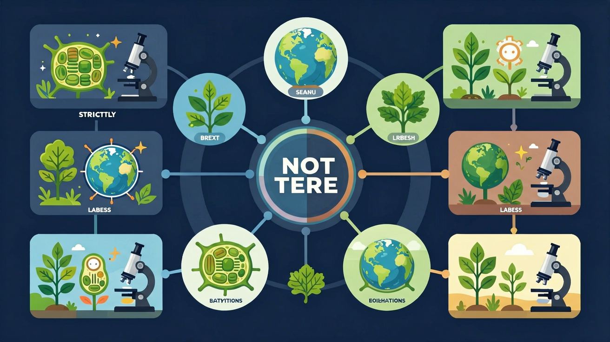

Interactive Canvas
生物圈层归属：拖放生物到正确圈层
将生物拖到它主要生活的圈层位置
点击生物图标，将其拖到对应圈层（大气圈/水圈/岩石圈）
地球上所有生物与其生存环境构成的统一整体——生物圈，是地球上最大的生态系统，也是所有生物共同的家园。


选一个你关心的问题
选择或输入后，本课围绕你的问题展开。
生物圈包括哪些范围？
地球上所有生物与其生存环境构成的统一整体叫做生物圈。它是地球上最大的生态系统，也是最高层次的生命系统。生物圈不是生物的简单集合，而是生物与环境相互作用、相互依存的有机整体。
但是：地球那么大，生物到底生活在哪些地方？生物圈的边界在哪里？
所以：学习生物圈——理解所有生命共同生活的这个"大家庭"的范围和特点
地球上所有生物与其生存环境构成的统一整体。包含所有生态系统，是地球上最大、最高层次的生态系统。
所有生物（动物植物微生物）+ 非生物环境（阳光、水、空气、土壤等）= 统一整体
最大的生态系统、自我调节能力最强、各部分相互联系、物质循环和能量流动贯穿其中
生物圈的范围以海平面为基准，向上可达大气圈底部约10千米处（对流层），向下深入岩石圈地表以下约2~3千米处以及水圈的全部深度约11千米（马里亚纳海沟）。整个生物圈的厚度大约为20千米。但绝大多数生物集中分布在地面以上约100米到水面以下约200米的范围内，这是因为该区域光照、温度、水分等条件最适合生物生存。
以氮气和氧气为主。底部约10千米（对流层）有生物分布。能飞翔的鸟类和昆虫、微小的细菌和真菌孢子都可在此生存活动。
包括全部海洋和江河湖泊。几乎到处都有生物分布，从浅海珊瑚到万米深海热泉口的嗜热菌，水圈是绝大多数生物的摇篮。
一切陆生生物的立足点。土壤中有大量微生物、蚯蚓等土壤动物，地表有各类植物和动物，是人类活动的主要场所。
生物圈之所以适合生物生存，是因为它能持续稳定地提供生命所需的各种条件。没有这些条件，生命就无法维持。科学家在寻找外星生命时，首先关注的就是星球能否提供类似的条件。这六大条件相互配合，缺一不可，共同构成了生物赖以生存的环境基础。
几乎所有生态系统的能量来源，植物光合作用的驱动力，维持地球温度。
生物体的重要组成成分，代谢反应的溶剂和参与者，占人体体重约60%-70%。
提供O₂和CO₂，动物呼吸需要氧气，植物光合作用需要二氧化碳。
生物体内酶活性受温度影响，大多数生物适宜温度在-30℃~50℃之间。
维持生命活动的物质基础，包括无机盐和有机物，来自食物或土壤。
生物活动、繁殖所需的领域范围，不同物种对空间需求差异很大。
虽然生物圈可以分为大气圈、水圈、岩石圈三个部分，但这三者并不是彼此独立的。
它们相互交叉、相互影响，共同构成一个不可分割的统一整体。
例如，森林中的大树根系深入岩石圈（土壤），树冠伸入大气圈，而树体内含有大量的水分属于水圈的一部分。
候鸟在大气圈中飞行迁徙，在岩石圈上筑巢繁殖，在水圈中捕食鱼虾。
一条河流的污染可以通过食物链影响整个流域的生物，最终通过大气循环影响远处的生态系统。
这都说明生物圈各部分之间紧密联系、互为整体。
任何一个生态系统都不是孤立存在的，所有生态系统共同组成了生物圈这个最大的整体。
将生物拖到它主要生活的圈层位置
错：生物圈就是指所有生物的集合（生物圈层）
对：生物圈 = 所有生物 + 生存环境，比生物圈层范围更大
错：大气圈、水圈、岩石圈三个部分互不相关
对：三圈相互交叉渗透，生物往往跨圈层活动
错：海底太深太暗所以没有任何生物
对：深海热泉口有丰富的微生物和动物群落
填空：生物圈包括____底部、____和____表面。
解释为什么说"生物圈是一个统一的整体"？举例说明。
火星上能否形成生物圈？分析火星环境缺少哪些关键条件。
下列关于生物圈的说法中，正确的是？
生物圈是地球上最大的生态系统，是所有生命的共同家园。
先独立作答，再点选项查看对错与错因。
下列哪项最准确地描述了生物圈的范围？
在校园生态园中，下列哪项属于生产者？
生物圈与生态系统的关系是？
生物圈包括地球上所有生物及其____的总和。
答案：生存环境
生物圈不仅包括生物，还包括它们生存的环境。
在生态系统中，____能够将无机物转化为有机物。
答案：生产者
生产者通过光合作用将无机物转化为有机物。
下列哪项最准确地描述了生物圈的概念？
通过观察校园生态园中的生物和环境，探究生物圈的组成和功能。
❓ 为什么说地球上的生物都离不开生物圈？
❓ 生物圈的范围到底有多大？
❓ 人类活动对生物圈的影响是好是坏？
学完这一课，这些问题你都能自信地回答。
生物圈由大气圈下层/水圈/岩石圈表层组成
厚度约20千米的'生命薄膜'包裹着地球
比大气圈薄但比臭氧层厚100倍
想象成包裹地球的透明鸡蛋膜
国际空间站已飞出生物圈范围
✅ 深海属于水圈范围
💡 忽略水圈包括所有液态水域
✅ 仅指对流层（约10-12千米）
💡 混淆大气圈与大气层概念
口诀：大气水岩三层套，二十千米生命罩
类比：像保护手机的钢化膜，生物圈是地球的生命保护膜